注意事項
数字だけで補液・制限を決めない
- IN−OUTがプラスでも、循環血液量が足りないことがある
- IN−OUTがマイナスでも、体液過剰が残ることがある
- 尿量だけで腎機能や腎血流を断定しない
- 水分の分布が変わる病態・状況
- 心不全
- 腎不全
- 肝不全
- 敗血症
- 術後
- 熱傷
- 患者評価を優先する変化
- 急な呼吸困難
- 意識変化
- ショック
- 無尿
- 急速な出血
集計より患者評価を優先する。
IN-OUTバランスとは
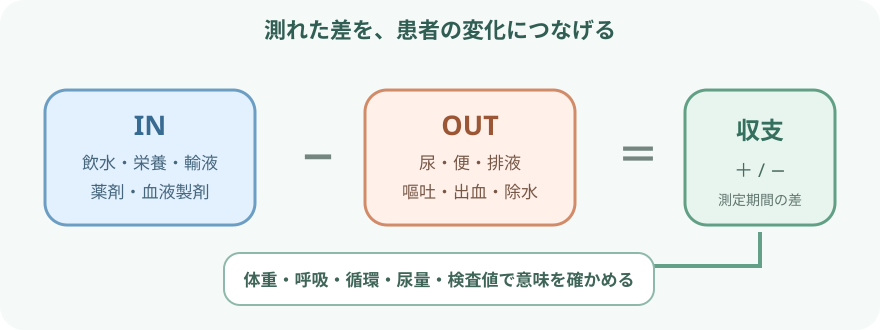
- 水分出納は「測定した期間の差」。
- 体内の水分量そのものを直接測った値ではない。
基本式
- 水分出納 ＝ INの合計 − OUTの合計
- プラス：記録上、入った量が出た量より多い
- マイナス：記録上、出た量が入った量より多い
- 評価単位はmL。
- 開始・終了時刻を必ずそろえる。
- 「プラス＝体液過剰」「マイナス＝脱水」と直結させない。
- 収支と患者の状態をつなぐ確認
- 測定漏れ
- 不感蒸泄
- 体液の血管外移動
- 治療目標
何をIN・OUTに含めるか
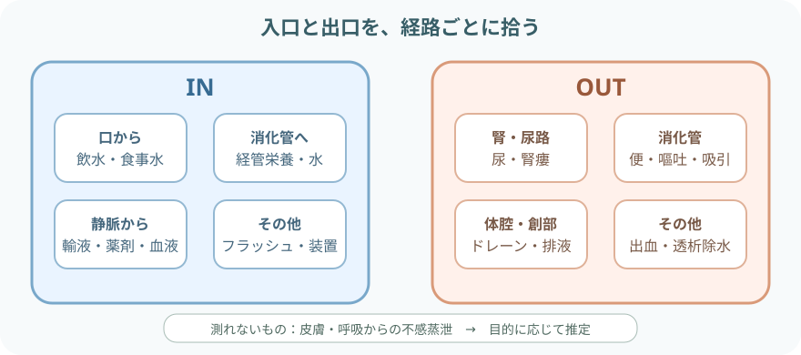
- 少量のフラッシュや薬剤希釈液も積み重なる。
- 何を集計するかを勤務帯・部署でそろえる。
IN
- 経口から入った水分の例
- 飲水
- 氷
- ゼリー
- 食事に含まれる水分を集計する場合の食事水
- 経管から入った水分
- 経管栄養剤
- 投与前後のフラッシュ
- 末梢・中心静脈から入った水分
- 輸液
- 薬剤希釈液
- 持続注入
- 血液製剤、透析・補助循環などで体内へ入った量
OUT
- 尿のOUTを測る経路の例
- 自然排尿
- 尿道カテーテル
- 腎瘻
- 便・ストーマ・嘔吐のOUT
- 液状便
- ストーマ排液
- 嘔吐
- 排液・吸引のOUT
- ドレーン
- 胃管吸引
- 胸腔・腹腔からの排液
- 測定できた出血、透析・限外濾過などで除去した量
- 創部や瘻孔からの排液など、施設で集計対象とするもの
測定の手順
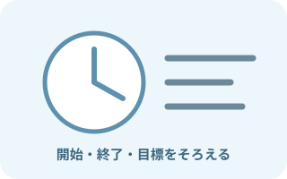
集計する期間と目標を確認- 集計する期間の例
- 勤務帯
- 24時間
- 術中
開始・終了時刻を統一する。
- 測定開始前の確認
- 目標バランス
- 尿量測定間隔
- 報告基準
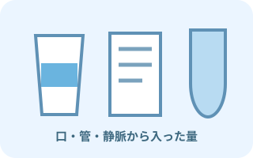
INを投与した時点で記録INとして確認する量- 口から入った量
- 輸液
- 薬剤
- 栄養
- フラッシュ
同じ量を二重に計上しない。
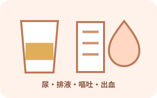
OUTを同じ単位で測る- 明記する測定方法の例
- 排液容器の目盛り
- 重量換算
- 装置表示
- 廃棄する前に量と性状を記録する。
- 重複・漏れ・境界時刻を確認照合すること
- 前勤務帯との引き継ぎ
- バッグ交換
- ボトル残量
- 装置積算値
- mLとLの単位
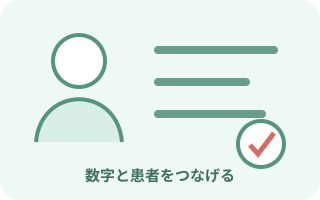
計算して患者の変化と照合前回と比較する患者の変化- 体重
- 呼吸
- 血圧
- 浮腫
- 尿量
- 腎機能
- Na
合計値だけで評価を終えない。
計算例
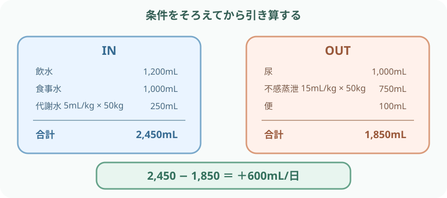
- IN：1,200＋1,000＋250＝2,450mL
- OUT：1,000＋750＋100＝1,850mL
- 水分出納：2,450−1,850＝＋600mL/日
「必要水分量」の読み方
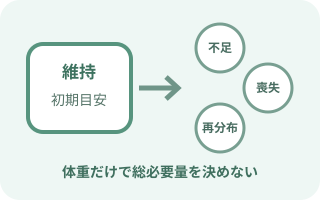
維持量と総必要量を分ける
- 安定した成人の静脈内維持輸液では、水分25～30mL/kg/日が初期目安の一つ
- 維持輸液で少ない量を検討する背景の例
- 高齢・フレイル
- 腎機能低下
- 心不全
20～25mL/kg/日など少ない量を検討する。
- 維持量と別に評価して加減すること
- 既存の不足・過剰
- 発熱
- 下痢
- 嘔吐
- ドレーン排液
- 出血
- 下記から入る水分も総量へ含める。総水分量に含めるもの
- 経口
- 経管
- 薬剤
- 栄養
- 25～30mL/kg/日は、すべての人の飲水目標でも、輸液指示でもない。
- 別の評価が必要な状況の例
- 妊娠
- 重い腎・肝疾患
- 熱傷
収支を4方向から読む
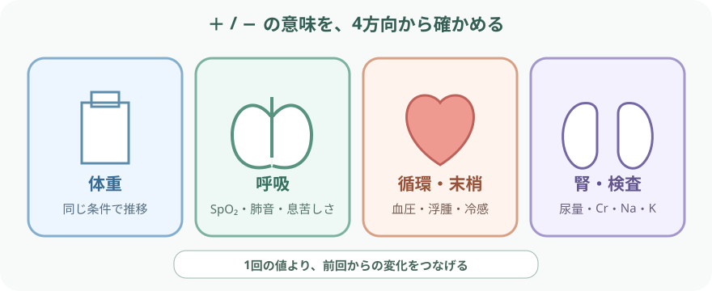
- 前回とそろえる体重測定条件
- 体重計
- 時間
- 衣服
- 排泄条件
- 呼吸の評価
- 呼吸数
- SpO₂
- 呼吸困難
- 起座呼吸
- 肺音
- 循環・末梢の評価
- 血圧
- 脈拍
- 起立時症状
- 頸静脈
- 浮腫
- 末梢冷感
- 毛細血管再充満
- 腎・検査の評価
- 尿量と性状
- Cr
- BUN
- Na
- K
- Hb
- Ht
- 必要時の画像や超音波
体重に影響する体液以外の要因
- 測定条件
- 便
- 食事
- 衣服
- 装置
- 筋肉量の変化
- 急な体重変化は体液変化の手がかりになる。
- 体重は、上記の体液以外の要因でもずれる。
体液過剰・不足を疑う変化
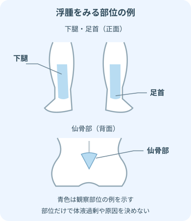
- 下腿・足首と仙骨部の位置を確認する。
- 浮腫の部位だけで原因を決めず、下記などと合わせて評価する。浮腫と合わせて評価する項目
- 体重
- 呼吸
- 循環
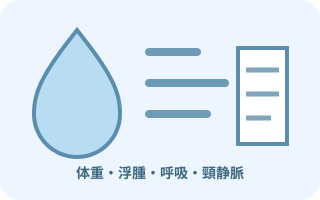
体液過剰を疑う
- 体重・浮腫の変化
- 短期間の体重増加
- 末梢・仙骨部浮腫
- 呼吸の変化
- 呼吸困難
- 起座呼吸
- SpO₂低下
- 湿性ラ音
- 頸静脈・血圧の変化
- 頸静脈怒張
- 血圧上昇または病態に伴う低下
- 尿量・利尿反応の変化
- 尿量低下
- 利尿反応低下
- 体液過剰の評価で比較する変化の例
- 胸部画像
- 超音波
- BNP
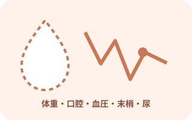
体液不足を疑う
- 体重・口腔の変化
- 短期間の体重減少
- 口渇
- 口腔粘膜の乾燥
- 循環の変化
- 頻脈
- 血圧低下
- 起立時のめまい・ふらつき
- 末梢・意識の変化
- 末梢冷感
- 毛細血管再充満遅延
- 意識変化
- 尿の変化
- 尿量低下
- 濃縮尿
- 喪失・摂取不足の確認
- 嘔吐
- 下痢
- 発熱
- 発汗
- 出血
- 摂取不足
尿量の読み方
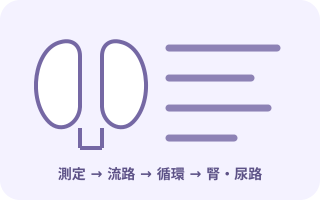
少ないときは原因を分ける
- 測定・排尿経路の確認
- 測定漏れ
- 排尿容器
- 尿道カテーテルの屈曲・閉塞
- 摂取・喪失の確認
- 摂取不足
- 発熱
- 消化管喪失
- 出血
- 循環の確認
- 低血圧
- 心拍出量低下
- 敗血症
- 腎・尿路の確認
- 腎実質障害
- 尿路閉塞
- 尿量低下時に確認する薬剤の影響の例
- 利尿薬
- 造影剤
- 腎毒性薬剤
0.5mL/kg/時をどう使うか
- KDIGOでは、6時間以上0.5mL/kg/時未満がAKI診断基準の一部
- 単回の1時間尿量だけでAKIと診断しない
- 尿量が保たれていてもAKIは否定できない
- 尿量を増やすこと自体を治療目標にしない
- 尿量測定だけを目的に膀胱留置カテーテルを漫然と続けない。
- 厳密な時間尿量が治療判断に必要か、感染リスクと合わせて毎日確認する。
計算を補正して考える場面
- 発熱・多呼吸・発汗で記録すること
- 環境
- 体温
- 呼吸数
測れない喪失が増える可能性がある。
- 下痢・嘔吐・瘻孔・ドレーンの確認
- 量
- 色
- 性状
- 回数
- 電解質喪失
- 出血で合わせて評価すること
- 循環
- Hb
- 創部
- 画像
排液量に見えない出血もある。
- 利尿薬・透析で尿量や除水量と合わせてみること
- 血圧
- 体重
- 腎機能
- 電解質
- 症状
- 有効循環血液量の不足に注意する背景
- 心不全
- 腎不全
- 肝硬変
- これらでは全身に水分が多くても、有効循環血液量が不足することがある。
- 収支と循環が一致しないことがある背景
- 術後
- 敗血症
- 低アルブミン
- これらでは血管外への移動や浮腫があり、単純な収支と循環が一致しないことがある。
- 電解質と血糖を確認する背景
- 高血糖
- 高Na血症
- これらでは、浸透圧利尿や自由水不足を含めて確認する。
報告・記録
記録すること
- 測定の条件・目標
- 集計期間
- 目標バランス
- 測定間隔
- 収支の記録
- IN・OUTの内訳
- 合計
- 差
- 測定の確かさ
- 測定方法
- 推定値
- 測定できなかった量
- 体重・バイタルの記録
- 体重と測定条件
- 血圧
- 脈拍
- 呼吸
- SpO₂
- 患者所見の記録
- 尿量・性状
- 浮腫
- 口渇
- 肺音
- 意識
- 末梢循環
- 検査値と推移を記録する項目の例
- Cr
- BUN
- Na
- K
- 治療と反応を記録する項目の例
- 輸液
- 利尿薬
- 透析
- 飲水制限
報告は「差＋変化＋背景」
- 「24時間で＋1,200mL」
- 「前日より体重1.0kg増加、下腿浮腫が増えた」
- 「呼吸数増加、SpO₂低下、湿性ラ音がある」
- 「尿量は直近6時間で低下し、カテーテル屈曲はない」